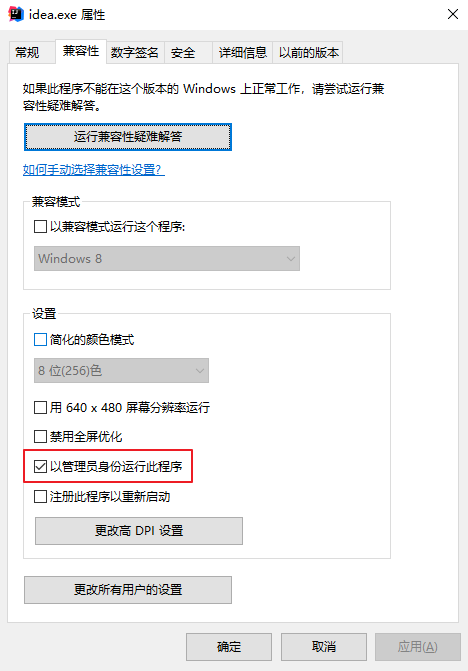
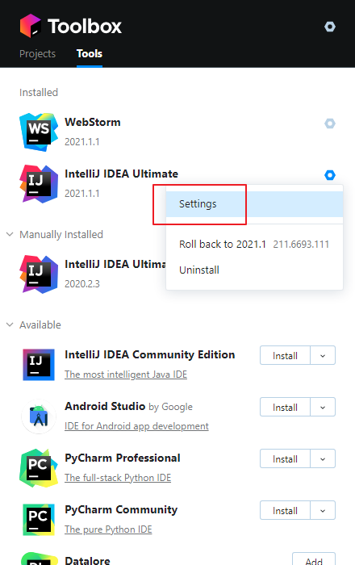
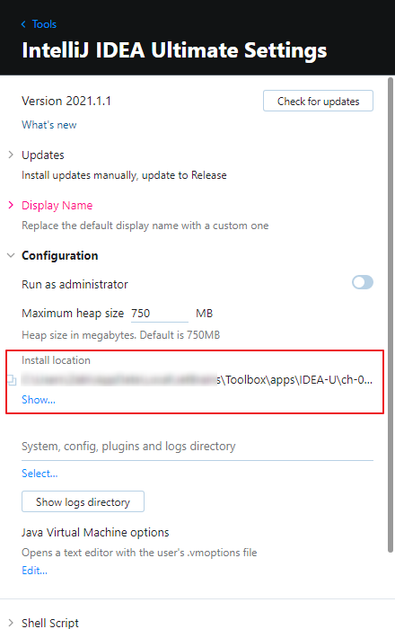
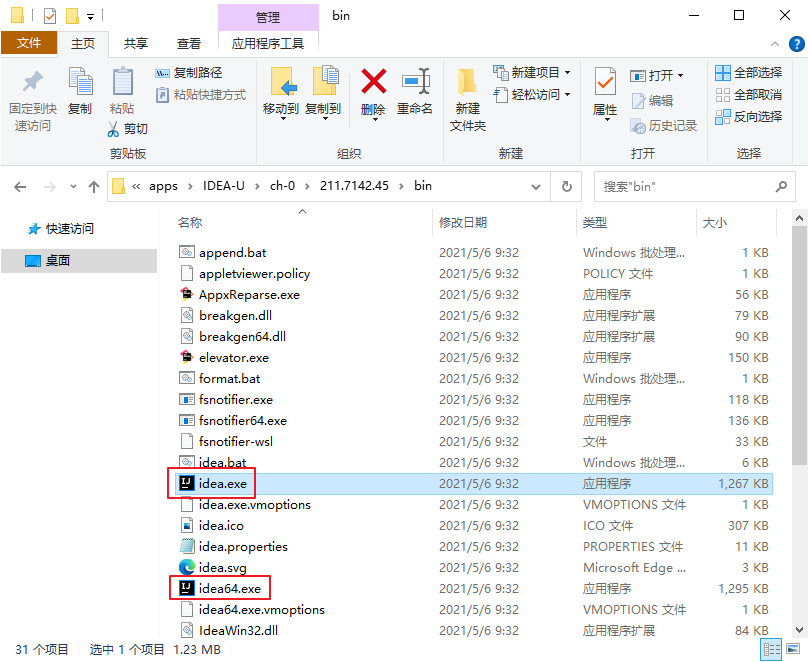

在IDEA上跳过的坑们
问题描述：
确保配置了系统环境变量后，IDEA的Terminal窗口使用 mvn 命令，控制台提示：'mvn' 不是内部或外部命令，也不是可运行的程序
解决方法：
找到启动的exe，右键修改属性配置：“以管理员身份运行此程序”，重启IDEA后，生效

使用Toolbox启动IDEA的位置查找
打开IDEA设置

在设置中找到安装路径

进入
具体版本\bin目录，可见两个exe
问题描述：
Terminal执行 mvn test --setting D:\.m2\settings-aliyun.xml ，提示：[ERROR] No compiler is provided in this environment. Perhaps you are running on a JRE rather than a JDK?
解决方法：
执行 mvn --version 确认Java配置是否异常，maven需要jdk而非jre。
1 | Apache Maven 3.8.1 (05******4c5d) |
从输出内容可知，java配置有误，修改为jdk后，解决
1 | set JAVA_HOME=C:\Program Files\Java\jdk1.8.0_202 |
问题描述：
启动服务，提示：Error running 'xxx': Command line is too long.
解决办法：
打开项目下的 .idea/workspace.xml 文件，在 <component name="PropertiesComponent"> 内添加属性： <property name="dynamic.classpath" value="true" />
1 | <component name="PropertiesComponent"> |
Comments